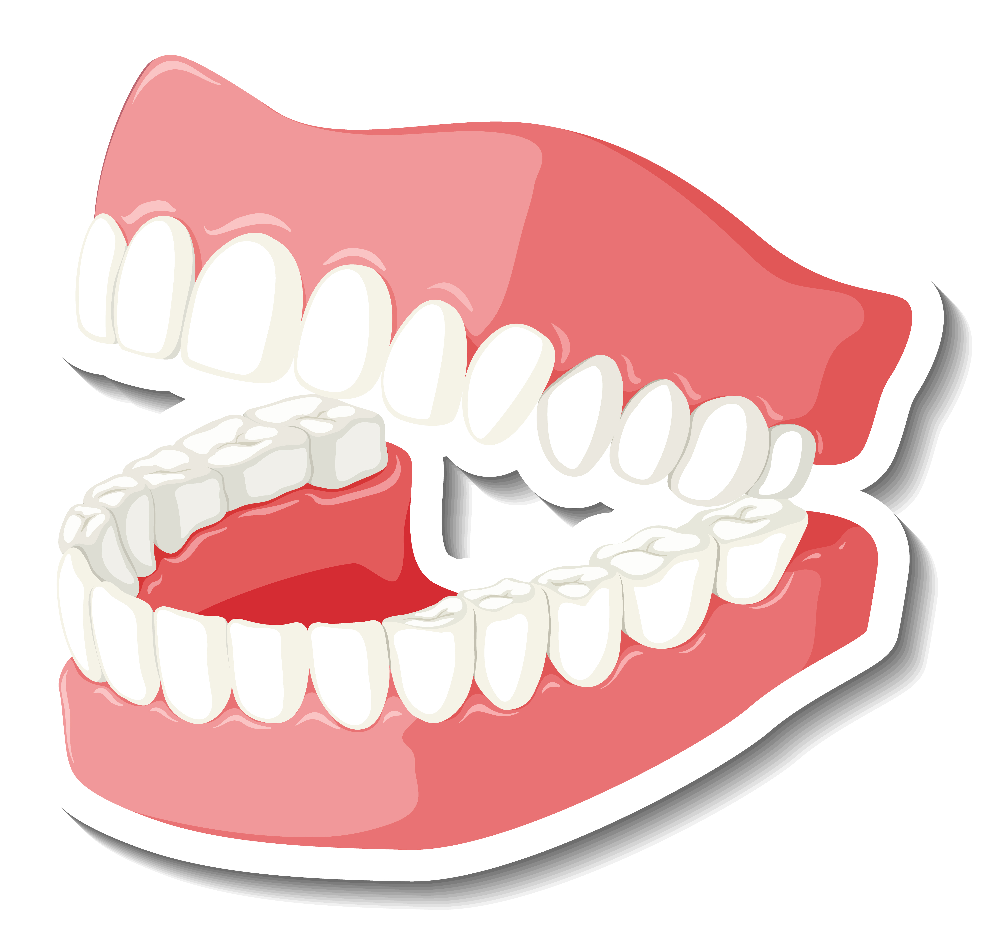
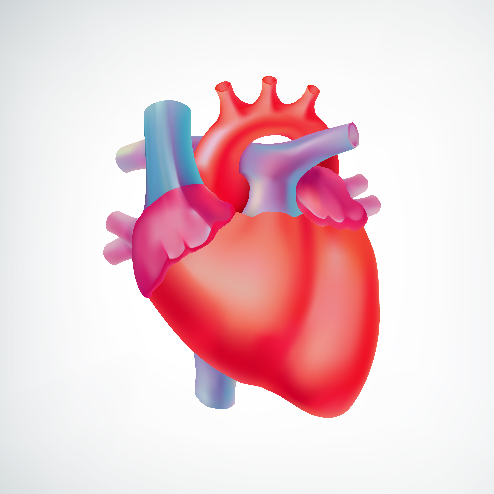
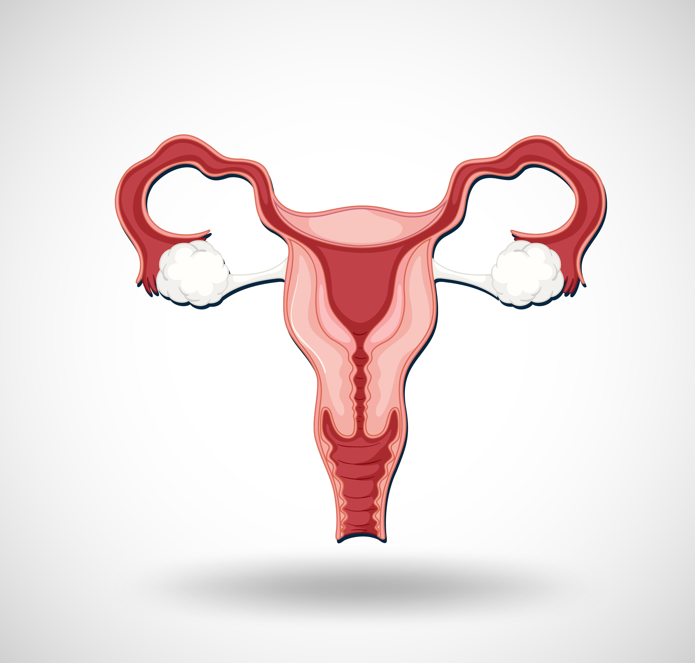
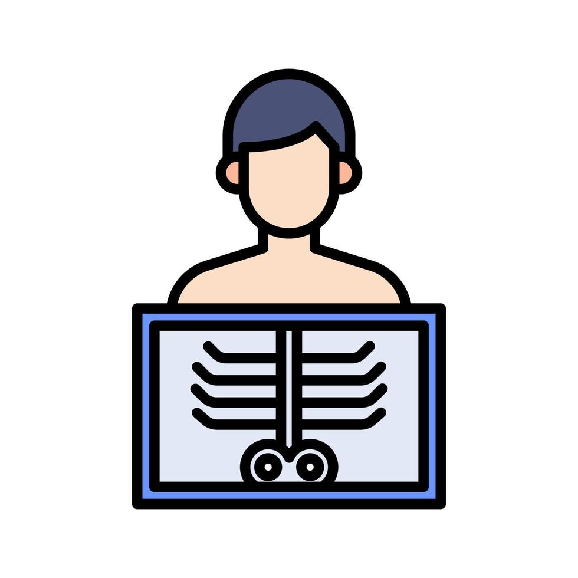
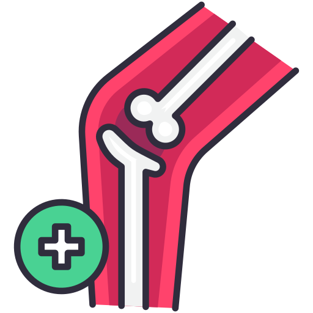

Nieuwe Afspraak
Volg het stappenplan om eenvoudig een afspraak te maken met een arts.
1
Kies afdeling
2
Kies arts
3
Kies een datum, tijd en bevestig
1. Kies een afdeling

Cardiologie

Neurologie

Gynaecologie

Kindergeneeskunde

Radiologie & Beeldvorming
Interne Geneeskunde

Orthopedie
2. Kies een arts
Drs. F. Alexander
Kaakchirurg
Drs. R. Velazquez
Kaakchirurg